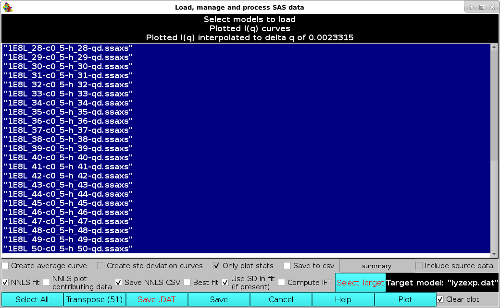
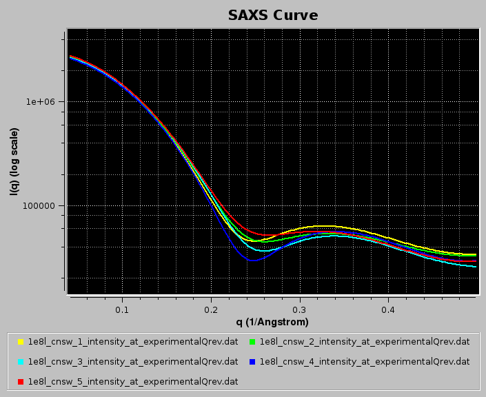
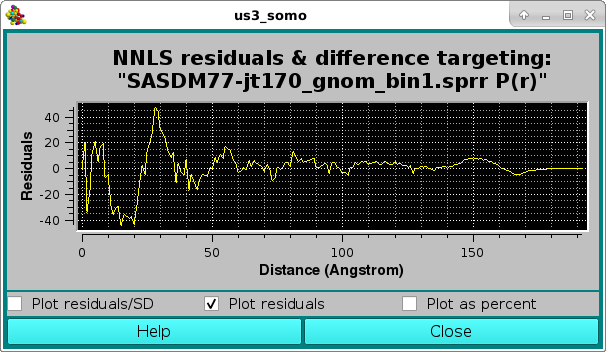

| |
Manual |
Previously computed csv-style I(q) vs. q files, such as those generated using the US-SOMO Batch Mode, can also be uploaded in the SOMO SAXS/SANS graphics window by pressing the Load SAXS (or Load SANS) button.
If one or multiple files were already loaded in the SAS window, a pop-up window will appear asking to select a target curve upon which the new data to be plotted can be rescaled:
Then, a new window "Load, manage, and process SAS data" will open listing all the individual curves present in the csv file, plus all other files already uploaded into the graphics window.
Individual data can be selected/deselected by clicking on them, or they can all be selected/deselected by pressing the Select All button. Several operations can then be performed before returning to the graphics window. In the example shown below, the last ten datasets were selected and the Create average curve, Create std deviation curves, Only plot stats, and Save to csv checkboxes were ticked. This will create an average curve from the selected dataset, plus +1 SD and -1 SD curves. Only the average and SD curves will be plotted (because the Only plot stats checkbox was selected). Furthermore, the resulting average and SD curves will be saved in another csv file, whose filename can be entered in the field next to the Save to csv checkbox. The original source data can be also saved in the new csv file by ticking the Include source data checkbox.
Unticking the Clear plot checkbox in the lower right corner will leave previously plotted data in the SAS window.
Note that on Windows, the shading of selected datasets will differ - generally a light gray or light blue.
After the appropriate selection, if one or multiple files were already loaded in the SAS window, pressing the Plot button will bring up again the pop-up window asking to select a target curve upon which the new data to be plotted can be rescaled:
After selecting the curve and pressing OK, the graphics window will be updated (and at the same time also the progress window in the bottom-left corner of the panel):
Here the filenames are also shown (pressing the Legend button in the US-SOMO SAXS/SANS panel), and the width of the curves was also increased (pressing once the Width button in the US-SOMO SAXS/SANS panel).
Since in this case the Clear plot checkbox was unticked, the resulting average curve is scaled against the selected target curve, and a pop-up window with the residuals will appear:

From the SAXS/SANS I(q) Plotting Functions: panel, pressing the Load Plotted button will re-open the Load, manage, and process SAS data window, listing all data currently shown on the graphics window, on which further operations can be performed:
For instance, the selected data, which are stored in rows, can be transposed into columns by pressing the Transpose button (the number in parentheses in the button label will show how many datasets are going to be transposed). This will bring up a save window where a path and a filename can be chosen. The transposed file will be saved in csv format.
Alternatively, a Crysol-compatible file can be saved by pressing the Save .DAT button, bringing up again a save window where a path and a filename can be chosen. Currently (March 2023) only one dataset at the time can be saved in .DAT format (2 or 3 columns, depending on the presence of SD data).
Pressing the Save button will instead save the selected dataset(s) into another csv file maintaining the rows storage format.
Pressing Cancel will close this window.
More operations can be performed on multiple I(q) vs. q files within this module.
A non-negative least squares (NNLS) procedure can be utilized to find the best combination of model curves matching an experimental dataset. This operation is performed by first selecting the experimental dataset by clicking on it, and then pressing the Select Target button (available only when a single dataset is selected). The chosen dataset name will then appear in the field next to the Select Target button. If a single (experimental) data file was already loaded into the graphics window, it will be automatically chosen as the target dataset (but it could be changed as described above). Next, the datasets on which the NNLS is to be performed are selected (efficiently by first pressing the Select All button and then de-selecting the unwanted datasets by single-clicking on their names):

In new releases produced from March 2023, it is possible to save the NNLS results (model data contributing to the fit) and associated statistics (see list below) in a CSV file by selecting the Save NNLS CSV checkbox (default: unselected).
The new checkbox Use SD in fit (if present) has been added to allow disabling weighting each datapoint by the target curve associated SD. This checkbox is by default selected if the module is operanting on I(q) vs. q data (see more below). If this checkbox is deselected, the NNLS χ2 fitting is disabled and NNLS minimizes root-mean square deviation (RMSD).
The new NNLS plot contributing data checkbox allows plotting, together with the NNLS-generated composite model curve, also each contributing curve(s) among the ones selected for NNLS fitting (default: unselected).
Pressing the Plot button will then launch the NNLS operation, at the end of which the program will return to the main US-SOMO SAXS/SANS panel.
If the Save NNLS CSV checkbox was selected, a pop-up panel will appear proposing a filename and location where the NNLS results (model data contributing to the fit) and associated statistics (see list below) will be saved in csv format, such as "lyzexp_NNLS_results.csv" in this case. Pressing "Save" will save the csv file and allow the NNLS fit operation to proceed.
Since the Clear plot button was left checked, the pop-up window asking to confirm/change/deselect a target curve upon which the new data to be plotted can be rescaled will not appear, and the graphics window will be updated:

Here, the Err checkbox in the main US-SOMO SAXS/SANS panel has been selected, allowing to show the target curve as circles with their associated error bars.
At the same time, the progress window will report the results of the NNLS fit:
In the example above, two models, #18 & #23, contributed respectively by 65% and 35% to the final curve. χ2 and derived values will be displayed in the progress window only if SDs are available for the target curve, even if Use SD in fit (if present) is unchecked. Note that the reported normalized χ2 value ("nchi^2") appears to be excellent ("0.4597"), because the errors associated to the experimental data are quite large (see image of the fit above). In fact, the CorMap-calculated P-value for this fit, also reported ("5.85714e-10") is quite poor (automatically signalled as "bad" because P<0.01; "fair" P-values would be if 0.01≤P<0.05, "good" P-values would be if P>0.05). See here for an explanation of the CorMap implementation in US-SOMO.
If the NNLS plot contributing data checkbox had been selected, the two contributing curves would have been also plotted, as shown in the image below:
The goodness of the fit can be also evaluated by checking the residuals window:
Here, the two horizontal white lines indicates ± 2 SD. Alternatively, the residual can be viewed in a % mode by selecting the Plot as a percent checkbox, where the two horizontal lines indicate ± 5% :
The csv file for this analysis will have this structure:
"File","Model","Contribution weight"
"1E8L_18-c0_5-h_18-qd.ssaxs",18,0.648556
"1E8L_23-c0_5-h_23-qd.ssaxs",23,0.351444
"Messages:"
"NNLS target:","lyzexp.dat"
"using standard deviations to compute NNLS"
"Residual Euclidian norm of NNLS fit",9.46831
"Number of curves in the fit",50
"fitting range start, end, points:",0.0437161,0.498363,196
"chi^2",89.6489
"df",195
"nchi^2",0.459738
"nchi",0.67804
"r_sigma",0.276491
"nchi*r_sigma",0.187472
"P value",5.85714e-10,"bad"
"Scaling factor",1
Likewise, the best matching curve from an ensemble can be found by selecting the Best fit checkbox, and proceed as described above for the NNLS fit. At the end of the process, the program will return to the main US-SOMO SAXS/SANS panel, and at the same time also the progress window in the bottom-left corner of the panel:

In the example shown above, model #18 was found to have the best fit with the target experimental data. The curve is shown in green on the graphics window, and the same color is used in the progress window to indicate it.
As for the NNLS fit, the goodness of the fit is also evaluated by checking the residuals window:

Starting with the July 2022 intermediate release, it is now also possible in this module to sequentially process multiple I(q) vs. q datasets with the IFT method (see here) to produce the corresponding pair-wise distance distribution functions P(r) vs. r.
In the example below, we use WAXSiS-generated (https://waxsis.uni-saarland.de/) I(q) vs. q datasets from the first five models in the lysozyme NMR structure 1E8L.pdb, loaded from the main US-SOMO SAXS/SANS panel:

Pressing Load Plotted will bring up the Load, manage, and process SAS data window:
The computations are started by first selecting the Compute IFT checkbox, and then pressing the Run button (note that IF the I(q) vs. q datasets do not have standard deviations associated to each I(q) point, the Run button will NOT be available). The IFT module settings window will pop-up:

where we have changed the "Number of points in p(r)" from the default 50 to 100, and we have not entered a "Maximum diameter [Angstrom]" value, leaving all other fields unchanged. IMPORTANT: these parameters will apply to ALL the datasets selected!. Pressing the Process button will start the IFT program, whose progress will be displayed in the text window.
At the end of the first dataset processing, a pop-up panel will appear, asking for the potential normalization of the resulting p(r) vs. r function:
and reporting in the Remember for all files that contain: field the name of the first dataset processed. The normalization is done by entering the molecular weight of the structures from which the I(q) vs. q datasets were generated in the Molecular Weight (Daltons) field. To be able to apply this molecular weight to all the subsequent datasets, the Remember for all files that contain: checkbox should be selected, and a minimum common name should be left in its correspondfing field:

Pressing Close will allow the IFT process to complete and the various p(r) vs. r functions will be displayed in the P(r) Distribution Curve window:
and will be saved in both the ".dat" and ".sprr" formats. For multiple IFT processing, the back-calculated I(q) vs. q curves will not be displayed in the SAXS Curve window. Summary ".txt" files, containg also the computation of the radius of gyration, will also be produced.
In the image below, we illustrate the loading of multiple P(r) datasets to be NNLS fit to a target P(r) without using the target associated SD as weights (checkbox Use SD in fit (if present) deselected). In addition, the NNLS plot contributing data checkbox has been selected.
Pressing Plot will produce this graph:
where, in addition to the Target P(r) (green circles with error bars) and the NNLS-derived Model P(r) (yellow line), also the NNLS-selected contributing P(r) curves are shown (various colored lines). Using the scroll bar to the right-side of the legend panel, all the contributing P(r) data names can be seen. The system chosen for this example consisted in a two-domains protein linked by a long flexible linker, and many conformations were generated using the Monomer Monte Carlo (MMC) method (Curtis, J. E., Raghunandan, S., Nanda, H., and Krueger, S. SASSIE: A program to study intrinsically disordered biological molecules and macromolecular ensembles using experimental scattering restraints. Computer Physics Communications 183, 382-389, 2012), followed by P(r) computation in the US-SOMO Batch Mode Operation module (see here).
Note that since SD were present in the Target P(r), a χ2 value could be calculated for this NNLS fit, even if it was not used in the contributing data selection process. The goodness of the fit can be checked in the pop-up Residuals plot panel:

where the effect of the very small SD associated with the lower-r values is evident in the Residuals/SD plot mode, with the two horizontal white lines indicating the ± 2 SD limits. The residuals can be also viewed in the Residuals only mode:

or as a % difference, with the two horizontal white lines indicating the ± 5 % limits:

The effect of instead including the Target P(r) associated SD in the NNLS fit (checkbox Use SD in fit (if present) selected) can be seen in this figure:
where quite different contributing curves were NNLS-selected due to the larger SD values associated with the high-r P(r) region, resulting also in a visually worse fit, and confirmed by the pop-up Residuals/SD plot panel:
As before, the residuals can be also viewed in the Residuals only mode:
or as a % difference, with the two horizontal white lines indicating the ± 5 % limits:
The above example highlights the issues of the P(r) computed SD, often overall unrealistically small or quite high in the high-r region, especially when dealing with flexible structures for which the Dmax value is not well defined. A better evaluation of the goodness-of-the-fit of P(r) (real) space NNLS fit has been proposed (Brookes et al., J. Appl. Cryst. 56:910-926, 2023; DOI: 10.1107/S1600576723005344), where I(q) vs. q curves for each of the P(r) NNLS-selected contributing models are calculated using WAXSiS (https://waxsis.uni-saarland.de/), and then a sum weigheted by their % contributions is scaled against the experimental I(q) vs. q data.
This document is part of the UltraScan Software Documentation
distribution.
Copyright © notice.
The latest version of this document can always be found at:
Last modified on March 29, 2024
{kind=link}
{kind=link}
{kind=link}